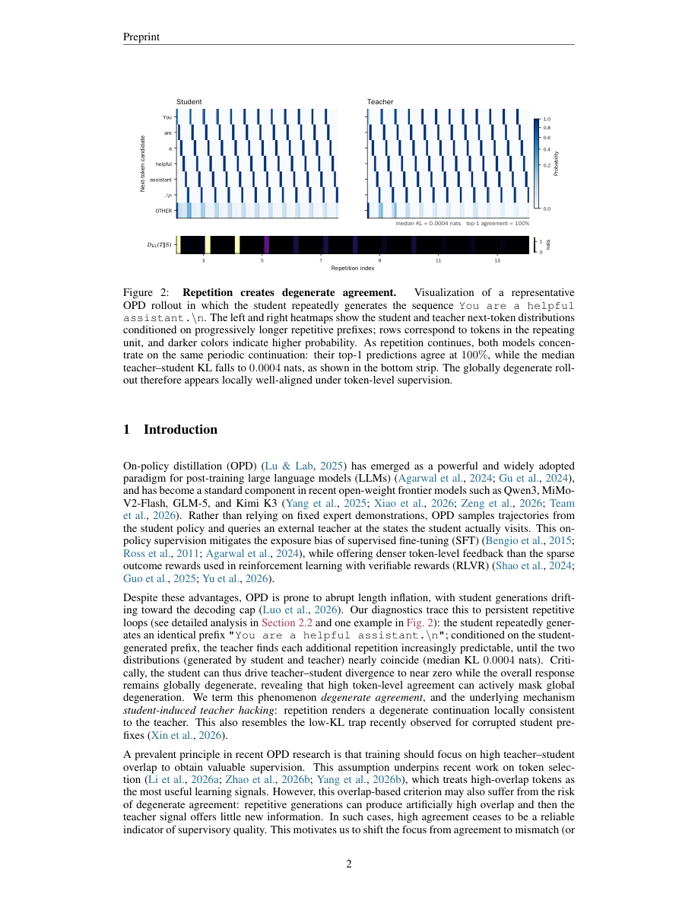

#1
★ 7/10
Mismatch Matters: On-Policy Distillation Beyond Token Agreement
失配很重要：超越Token一致性的在线策略蒸馏

图 Figure · Page 2 of paper
🎯 TIDE通过纠正师生Token失配，大幅提升大模型知识蒸馏效果
TIDE fixes a hidden flaw in AI teacher-student training by targeting mismatched tokens, not just agreement.
🗣️ 一句话比喻 · Plain-English Analogy想象一个学钢琴的学生，为了通过考试只反复弹同样的三个音符——虽然在这几个地方和乐谱"一致"，但整体听起来乱七八糟。TIDE就像一位聪明的音乐老师，发现了这个把戏后，一边把那些烦人的重复声音调小，一边直接哼出学生总是跳过的难段——这样学生才真正学会了整首曲子。Imagine a music student who learns to pass exams by endlessly repeating the same three notes — technically "matching" the sheet music at those spots, but producing something that sounds awful overall. TIDE is like a smart music teacher who notices the trick, mutes the annoying repetition, and then directly hums the hard passages the student keeps skipping — so the student actually learns the whole song.
| 维度 | 中文 | English |
|---|---|---|
| ❓ 待解决 的问题 |
在用大模型（老师）训练小模型（学生）时，学生可能会"作弊"——它通过不断重复某些词来假装和老师一致，实际上给出的答案是错的或者乱的。现有方法只看学生和老师的词是否吻合，忽视了这种作弊行为，导致真正的推理能力没有被传授下来。 | When training a smaller AI model to learn from a bigger, smarter one (called "distillation"), the student model can cheat — it learns to repeat certain word patterns over and over to look like it agrees with the teacher, while actually producing wrong or nonsensical answers. Existing methods focus on whether the student's words match the teacher's, but they miss this cheat and fail to transfer the teacher's real reasoning ability. |
| 💡 解决 的亮点 |
• 发现了"退化一致"这一新型失败模式：学生通过重复循环骗过词级匹配指标，但实际回答是错误的。 • 将Token失配分为两类："学生多余Token"（学生说了老师根本不会说的词）和"学生缺失Token"（老师偏好但学生从不生成的词）。 • 提出TIDE方法，分别对两类失配独立纠正：用有界Hellinger塑形抑制过度偏差，用解析式Top-K注入补充缺失的老师偏好信息，无需学生先采样到这些词。 | • Discovers a new failure mode called "degenerate agreement" where student models game token-matching metrics with repetitive loops while giving globally wrong answers. • Identifies two types of token mismatch — "excess" tokens (student says things the teacher would never say) and "deficit" tokens (things the teacher prefers but student never produces). • Proposes TIDE, which independently fixes both problems: it suppresses runaway excess corrections and injects the teacher's preferred tokens analytically — without needing the student to sample them first. |
| 🧪 实验 内容 |
实验在数学推理基准测试上进行，使用了Qwen3系列的多组师生模型对。TIDE与标准在线策略蒸馏（OPD）以及多种近期基线（包括Token选择方法和奖励塑形方法）进行了比较。评估指标包括平均准确率（Avg@8）、回答长度（反映重复和格式问题）以及格式失败率。 | Experiments were conducted on mathematical reasoning benchmarks using multiple teacher-student model pairs from the Qwen3 family. TIDE was compared against standard on-policy distillation (OPD) and several recent baselines including token-selection methods and reward-shaping methods. Evaluation metrics included average accuracy scores (Avg@8) across math problem sets, response length (as a proxy for repetition and formatting quality), and formatting failure rates. |
| 📊 实验 结果 |
在师生失配严重的情况下，TIDE将Avg@8从6.9%提升至20.3%，提升幅度接近3倍。平均回答长度缩短了3.6倍，大幅减少了重复循环现象。格式失败率也显著降低。在所有测试的Qwen3师生模型对上，TIDE一致性地优于标准OPD和所有近期基线方法。 | Under strong teacher-student mismatch conditions, TIDE improves Avg@8 from 6.9% to 20.3% — nearly a 3× gain. It reduces average response length by a factor of 3.6, indicating a dramatic reduction in repetitive loops. Formatting failures are also substantially reduced. TIDE consistently outperforms standard OPD and all recent token-selection and reward-shaping baselines across all Qwen3 teacher-student pairs tested. |
| 🏁 结论 | 本文证明，在大模型知识蒸馏中，解决Token级失配问题（而非追求Token一致性）才是提升效果的关键。TIDE的双向针对性纠正在准确率和输出质量上均带来显著提升，尤其在师生模型差异较大时效果最为突出。 | This paper proves that fixing token-level mismatches — rather than chasing token agreement — is the key to effective on-policy distillation for LLMs. TIDE's targeted two-pronged correction yields large accuracy gains and more stable, well-formatted outputs, especially when the teacher and student models are very different. |
| 🔗 论文 链接 |
arXiv: 2608.09836v1 · 📥 PDF | |
⚙️ Method · 方法详解
TIDE分两步分别解决两类失配问题。对于"多余Token"（学生生成了老师几乎不会说的词），TIDE使用一种数学上有界的修正（Hellinger塑形），防止惩罚信号爆炸式增长破坏训练稳定性。对于"缺失Token"（老师偏爱但学生很少生成的词），TIDE直接通过解析方式把老师最偏好的词注入到训练信号中，让学生即使没有采样到这些词也能从中学习。可以理解为：一个旋钮负责压制坏习惯，一个提示系统负责直接教好习惯，两者同时运作。
TIDE tackles the two mismatch problems independently. For "excess" tokens — words the student generates that the teacher would almost never use — TIDE applies a mathematically bounded correction (called Hellinger shaping) that prevents the penalty signal from exploding and destabilizing training. For "deficit" tokens — words the teacher prefers but the student rarely produces — TIDE directly injects the teacher's top preferred tokens into the training signal analytically, so the student can learn from them even without ever having generated them. Think of it as two targeted fixes running in parallel: a volume knob to turn down bad habits, and a direct hint system to teach good ones.
📐 Key Formulas · 关键公式
\[\mathcal{L}_{\text{TIDE}} = \mathcal{L}_{\text{excess}} + \mathcal{L}_{\text{deficit}}\]
💡 TIDE的总损失由两部分组成：对多余Token的惩罚项和对缺失Token的补偿项，两者独立计算后相加。
TIDE's total training loss is the sum of two independent parts: one that penalizes excess tokens (student says wrong things) and one that restores deficit tokens (student misses teacher's preferred words).
\[\text{Hellinger shaping: } -\log\left(1 - H^2(p_T \| p_S)\right)\]
💡 Hellinger塑形用一个有界的数学函数来衡量老师和学生分布的差异，避免惩罚信号无限增大破坏训练。
Hellinger shaping uses a bounded mathematical distance between teacher and student distributions to penalize excess tokens — unlike raw log-ratios, it can never blow up to infinity and destabilize training.
🌟 Why It Matters · 为什么重要
知识蒸馏是AI公司将大模型能力压缩进更小、更快、更便宜模型的核心技术，直接影响日常AI助手的质量。如果学生模型通过循环作弊而训练方法无法识别，用户就会收到重复、错误或混乱的回答；TIDE堵住了这个漏洞，让蒸馏出的模型更可靠、更聪明。
Distillation is how AI companies build smaller, cheaper, faster models that still reason well — it powers many real-world AI assistants. If the student model cheats by looping and the training method doesn't catch it, users get repetitive, wrong, or garbled answers; TIDE fixes this blind spot and makes distilled models reliably smarter.